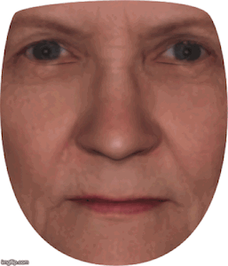

Participating in research studies
In accordance with my IRB protocols, I do not advertise my own research studies on my website. However, if you’re interested in participating in research in general there are many other studies you can take part in.
You can participate in online research studies from researchers all over the world at prolific.co. They’re based in the UK, but many studies are posted for participants in the US as well.
You can participate in local in-person research studies at a university near you. Check out your local university’s psychology department and medical school websites to find out what kinds of research studies they’re recruiting for.
Tools for conducting research
Recruiting online participants
I run online studies on prolific.co, a researcher-friendly website for online behavioral study recruitment that’s kind both to researchers and to participants. All my contacts with participants have been pleasant, and the Prolific support staff are so responsive and helpful. You can get a credit towards paying your first batch of participants if you sign up with my link here!
Running behavioral tasks online
I use gorilla.sc, a site that lets you build behavioral tasks both through GUI and code (their software is based on JavaScript/JQuery, though you don’t need to know either of those languages to use their tools). Their site is easy to use for JavaScript novices (like me), and still allows for full customization through added code. Their support staff are stellar as well! Instead of paying a subscription fee, you pay about a dollar per each participant who completes a task built on their platform. If you’d like to sign up, you can run twenty participants free with a referral. (email me for a referral link; they don’t currently have a referral link set up. PS: An academic email address is required to claim the bonus.)
My active projects
Postdoctoral research
Human affective responses to looming motion
Rapidly approaching objects, like incoming predators or projectiles, are often dangerous. Many species of animals can detect and avoid the specific patterns of looming visual motion associated with such objects, using quite similar neural mechanisms.
Experience some looming motion with this video:
For example, mammals encode looming motion in the superior colliculus, a region of the midbrain that coordinates rapid reorienting to salient signals in the environment. In this project, I am using computational models from nonhuman animal research (for example, fruit flies!) to investigate how humans respond to looming motion:
How does looming motion in videos predict people’s emotional responses to those videos? Preliminary results suggest that the “loominess” of short, emotionally evocative videos can predict how people label their emotional responses to those videos (choices like “fear”, “joy”, “anxiety”, “excitement”, etc.). Specifically, patterns of looming-predicted emotional responses look like responses made based on subjective arousal, or how “activated” people feel when watching the videos.
How does the human superior colliculus encode looming motion? Preliminary results suggest that BOLD fMRI activity in the human superior colliculus does track with the “loominess” of videos–in particular, even boring videos of expanding rings typically used to map out visual space in the brain. We are currently conducting an fMRI study to look further at how superficial and deep layers of the superior colliculus might track different visual features of those videos, like retinotopy (where in the visual field is stuff happening?) vs. specific looming motion (is something expanding like it’s coming toward me, anywhere in the visual field?).
How does the human superior colliculus encode people’s emotional responses to naturalistic looming motion? We are currently conducting an fMRI study to test this question! We are showing people emotionally evocative videos of naturalistic looming (animals jumping at the camera… like the video above!), and then asking them to report how each video makes them feel. This way, we can directly compare patterns of BOLD activity in the superior colliculus based on what animals people are watching, whether those animals are looming, and how people feel as they watch.
Previous projects
Graduate school
Check out my dissertation for the (very) nitty-gritty of these projects!
Individual differences in age perception
When we see another person’s face, we pretty quickly estimate their race, gender, and age just from looking at their face. When it comes to age in particular–we can estimate someone’s age in years, but we can also label them as “young” or “old”. How do people categorize faces of different ages, and do different people categorize age differently? We show participants a series of faces made to appear young, old, and somewhere in the middle, and ask them to label each face as “young” or “old”.

Check out the “poster” video below for preliminary results on how the brain patterns of younger participants (in their 20s) change when judging faces based on their age vs. gender, or using binary vs. slider judgments.
Measurement of emotion self-reporting
What emotion are you feeling right now? When you’re experiencing some emotion, you could probably report what it is you’re feeling without much difficulty–this is something that humans can do readily. But how do we turn our subjective emotional experience into self-report, and how does this relate to other parts of our emotional lives? We’ve developed a psychophysics-style paradigm where we show participants a series of brief, emotionally evocative GIFs, ask them to choose one of two emotion words to describe each experience (e.g. “neutral” or “fear”), and then fit their responses to a psychometric function. This way, we can find out how fearful (for example) a GIF has to be for an individual to say they feel fear (their psychometric threshold). We’ve also administered a series of surveys on things like mood, depression/anxiety tendencies, and more, so we can begin to examine how emotion-labeling patterns (as indexed by the psychometric task) predict facets of people’s social & emotional lives.
We’ve run this first as a behavioral study, where results indicate that people who report being more emotionally expressive in their day-to-day lives have lower thresholds for reporting emotional responses to our GIFs (see this poster).
We also ran an fMRI study to investigate whether people’s neural representations of subjective emotional experiences, specifically ambiguous, mixed-emotion experiences, change based on how they report their emotional response to said experiences. Preliminary results indicate that fMRI patterns for mixed emotional experiences appear not as a blend of positive and negative patterns, but as a distinct pattern that may arise from the process of resolving emotional ambiguity. (see this poster).
Before graduate school
Attention, memory, and media multitasking
Media multitasking, or the act of engaging with multiple streams of media simultaneously, something. (If you’re listening to music while reading this, you’re engaging in media multitasking right now!) In the Stanford Memory Lab, we’ve demonstrated that individuals who chronically media multitask show a reduced working memory capacity, and that those people also show reduced long-term memory for the items they seem to be having more difficulty maintaining in working memory. What are the neural mechanisms subserving this relationship, and how do individual differences on a neural level track with trait media multitasking? It’s possible that the degree to which people favor the use of top-down, goal-directed attention vs. bottom-up, salience-reorienting attention might predict someone’s tendency to perform worse on these working memory and long-term memory tasks. At the Stanford Memory Lab, I helped use fMRI to investigate how activation in top-down dorsal attention networks and bottom-up ventral attention networks might predict whether someone will successfully engage with and remember a given stimulus. They are conducting a follow-up EEG project to investigate whether individual differences in power in certain EEG frequency bands, which might track top-down pre-stimulus preparatory attention, predict the degree to which someone will successfully engage with and remember a given stimulus.
Healthy aging and associative memory
Everyone experiences changes in cognition as they get older. We understand that some people develop neurodegenerative disorders as they age, such as Alzheimer’s disease and dementia, and that these pathological changes are associated with marked deficits in cognition. But this isn’t inevitable for people as they age. What kinds of cognitive changes should we expect as we age? What changes are nothing to worry about, and what changes are of medical concern? Existing research indicates that associative memory, the particular task of binding previously unrelated features into a single memory representation, may be a “canary in the coal mine” for pre-clinical cognitive decline. (When you run into an acquaintance at the grocery store, and you can remember the context in which you know them, but not what their name is, that’s your associative memory that’s failing you.) At the Stanford Memory Lab, I assisted with a large-scale individual differences study to try to describe how changes in cognition (associative memory in particular) relate to clinical markers of neurodegeneration in cognitively healthy older adults.
You can read the published results (to date) of this research here!